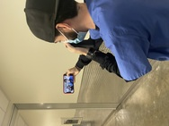
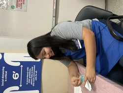
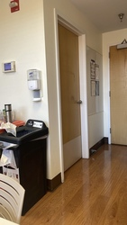
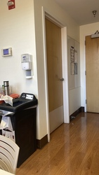
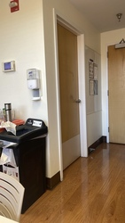

Ashley Vargas
I Worked as a store associate in Bed Bath & Beyond while at the same time assisting customers to find items they are looking for within the store. I helped put items away on shelves and restocked new products as well as helped ring people up at the registers which contributes to excellent customer service. I collaborated with customers who call into the store and help order certain items online for them, making sure customers are satisfied with online purchases. This also includes helping customers in store to make an online purchase for free delivery. I helped clean surfaces, bathrooms, picked up trash around the store, vacuumed, mopped, and put shopping carts back into the store when it was closing.
I worked as a Housekeeper at Stanford Hospital. I was placed within a unit and was given about 18-24 rooms to do my daily cleaning in a span of 8 hours. I picked up the garbage which included biohazard, linen, and trash. I cleaned areas which are considered high touch by patients such as the sink, the door handles, and the remote. I swept and mopped. I also made sure to dust areas above such as the TV, shelves, etc. I helped do a full cleaning of a discharged room once a patient left. When the rooms were all cleaned and I had more time to clean around, I would take the trash out from the break rooms and other rooms in which nurses and doctors cleaned. I would then do a somewhat similar process that I did for the patient's room. I would clean high touched areas, dust, sweep, and mop.
I worked as a Ross Retail associate. At Ross, I worked within many of the different areas such the mens section, women's section, babies section, makeup section, toy section, shoes, cleaning supplies, cooking supplies, animals section, etc. In the clothing section, I was given a rack to go around and pick up the clothes from the ground, thrown on the racks, or even placed in the wrong spot. Once I was done picking up all the clothes, I would go place the clothes in the correct section. Similar to all the other sections at Ross, whether it was picking up stuff from the ground or reorganizing the shelves. I would help stock the shelves up with a much bigger cart than the one used for clothes, which had a lot of mixed products. I was also placed in fitting rooms where I counted the amount of clothing people would try on and gave them a number. I would organize the clothes on a certain rack full of clothes that people did not like and other coworkers would put that clothes back to its place on the floor.
Experience
Retail Associate/Cashier
• Rung people and thier items up at register
• Restocked shelevs with new products
• Helped people on the phone or in person make an online order
Housekeeper
• Did daily cleaning which included, cleaning high touched surface, picking up trash, dusting, sweeping, mopping
• Did a deep cleaning on discharged rooms when patients would leave, to prepare the room for the next person
Retail Associate
• Picked up clothes from the ground and put it back to its correct spot
• Restocked shelves/reorganized shelves with new items
• Helped at the fitting room, letting people try on clothes and putting the clothes that are not wanted onto a certain rack in a specific order so it's easier to put back on the floor
Education
UC Riverside
University of California Riverside
University of California Riverside
Portfolio


 

